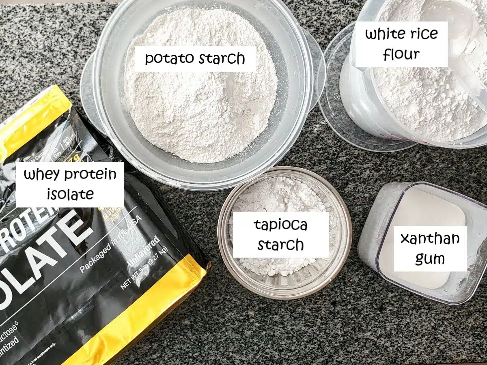

Gluten Free Bread Flour Blend

For all your gluten free bread baking needs, trust my Gluten Free Bread
Flour Blend will make the best gluten free bread you've ever had!
Ingredients
- 285 grams Potato Starch
- 250 grams Superfine White Rice Flour
- 75 grams Tapioca Starch
- 75 grams Whey Protein Isolate
- 15 grams Xanthan Gum
Instructions
-
Combine all flour blend ingredients in a large container that has a
tightly sealing lid. Replace the lid and shake the contents vigorously
several times, in all directions.
-
Remove the lid and use a whisk to finish combining the ingredients.
-
To make larger amounts, simply move the servings slider to the right
until you reach your desired amount (I always make 2.8kg (20 cups)).
-
Flour blend can be stored in a cool, dark area (such as a pantry or
closet) up to three months. For longer storage, freeze for up to one
year
Substitutions
-
For dairy free protein, you can TRY soy protein, hemp protein, pea
protein, egg white protein, pumpkin protein, vegan protein (all
clickable links) or any other pure protein powder. Please note, however,
that these are all simply suggestions. My bread flour blend works best
if there are NO substitutions, but I do understand that some of you may
have other allergies. I wish I was a guru of all other food aversions,
but I admit I am very challenged when it comes to others. The only one
I’m well versed in is gluten free. I’ve heard from many readers who
stated pea protein doesn’t work, while others have stated that it works
fine. Some stated hemp protein worked beautifully (giving the finished
bread a light green hue). One reader stated that a product that combines
pea and quinoa protein worked beautifully for her. However, I DID try
this product and did NOT get the usual rise and texture to my breads. In
fact, they were very flat and inedible and not up to the standards that
I’m used to in my recipes, so I won’t recommend that.
-
For the potato starch, one reader stated she had great results with
cassava flour instead of potato starch. I haven’t tried this, so I don’t
know what the results are like.
-
For the white rice flour, you may be able to substitute brown rice
flour, but try to get a superfine brown rice flour. None of Bob’s Red
Mill’s rice flours are fine enough and your dough consistency will be
different.
-
For the tapioca starch, you could try arrowroot powder or perhaps
cornstarch. Note that these have not been tested by me.
-
For the xanthan gum, this is a difficult one to substitute because it’s
very unique in its qualities. However, you are welcome to try guar gum.
I have never tried guar gum so I don’t know how it will react as a sub.